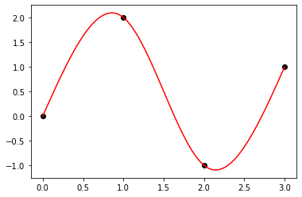

Solutions¶
import numpy as np
import matplotlib.pyplot as plt
from scipy import linalg
Exercise 02.1:
d_1_vals = [1, 2, 3, 4, 5, 6, 7, 8, 9]
d_2_vals = [0, 1, 2, 3, 4, 5, 6, 7, 8, 9]
E_vals = [0, -1, -2]
fig, ax = plt.subplots(figsize=(10, 2))
ax.axhline(0, color="black")
for E in E_vals:
for d1 in d_1_vals:
for d2 in d_2_vals:
ax.plot(-(d1 + d2 * 0.1) * 10**E, 0.0, color="red", marker="+", markersize=20)
ax.plot(+(d1 + d2 * 0.1) * 10**E, 0.0, color="red", marker="+", markersize=20)
ax.plot(0.0, 0.0, color="red", marker="+", markersize=20)
ax.set_yticks([])
ax.set_xlabel("x")
ax.set_xlim([-11, 11])
plt.show()

Exercise 02.2:
d_1_vals = [1]
d_2_vals = [0, 1]
E_vals = [1, 0, -1]
fig, ax = plt.subplots(figsize=(10, 2))
ax.axhline(0, color="black")
for E in E_vals:
for d1 in d_1_vals:
for d2 in d_2_vals:
ax.plot(-(d1 + d2 * 0.5) * 2**E, 0.0, color="red", marker="+", markersize=20)
ax.plot(+(d1 + d2 * 0.5) * 2**E, 0.0, color="red", marker="+", markersize=20)
ax.plot(0.0, 0.0, color="red", marker="+", markersize=20)
ax.set_yticks([])
ax.set_xlabel("x")
ax.set_xlim([-5, 5])
plt.show()

Exercise 02.3:
x = 0.1 + 0.2 - 0.3
for i in range(100):
x = x + x
print(x)
70368744177664.0
Exercise 02.4:
def function(x):
return (1.0 - np.cos(x)) / x**2
def relative_error(x):
return np.abs(0.5 - function(x)) / 0.5
x = np.linspace(-1.0e-7, 1.0e-7, 1000)
fig, ax = plt.subplots(1, 2, figsize=(8, 3))
ax[0].plot(x, function(x))
ax[0].set_xlabel("x")
ax[0].set_ylabel("f (x)")
ax[1].plot(x, relative_error(x))
ax[1].set_xlabel("x")
ax[1].set_ylabel("relative error (x)")
fig.tight_layout()
plt.show()
Exercise 02.5:
array = [0.9**n for n in range(0, 400)]
s_1 = 0.0
for x in array:
s_1 += x
s_2 = 0.0
for x in array[::-1]:
s_2 += x
print(s_1, s_2)
9.999999999999993 10.000000000000004
Exercise 02.6:
x = np.linspace(-1, 1, 100)
def exp_taylor(x):
return 1.0 + x + x**2 / 2.0
fig, ax = plt.subplots()
ax.plot(x, np.exp(x), color="black", linestyle="--")
ax.plot(x, exp_taylor(x), color="red")
plt.show()
def absolute_error(x):
return np.abs(np.exp(x) - exp_taylor(x))
def relative_error(x):
return np.abs(np.exp(x) - exp_taylor(x)) / np.exp(x)
fig, ax = plt.subplots()
ax.plot(x, absolute_error(x), color="blue")
ax.plot(x, relative_error(x), color="red")
plt.show()


Exercise 02.7:
def forward_diff(f, x, h):
return (f(x + h) - f(x)) / h
def central_diff(f, x, h):
return (f(x + h) - f(x - h)) / (2.0 * h)
x = np.linspace(-2.0 * np.pi, 2.0 * np.pi, 1000)
h = 0.5
fig, ax = plt.subplots()
ax.plot(x, forward_diff(np.sin, x, h), color="red")
ax.plot(x, central_diff(np.sin, x, h), color="blue")
ax.plot(x, np.cos(x), color="black", linestyle='--')
plt.show()
def forward_error(f, x, h, exact_value):
return np.abs(forward_diff(f, x, h) - exact_value) / np.abs(exact_value)
def central_error(f, x, h, exact_value):
return np.abs(central_diff(f, x, h) - exact_value) / np.abs(exact_value)
x = 1.0
h = np.array([2.0**(-n) for n in range(1, 60)]);
fig, ax = plt.subplots()
ax.loglog(h, forward_error(np.sin, x, h, np.cos(x)), color="red")
ax.loglog(h, central_error(np.sin, x, h, np.cos(x)), color="blue")
plt.show()


Exercise 02.8:
h = 0.1
x = np.arange(0, 10, h)
y_1 = np.zeros(x.size)
y_2 = np.zeros(x.size)
y_1[0] = 1.0
for i in range(x.size - 1):
y_1[i+1] = y_1[i] - y_1[i] * h
y_2[0] = 1.0
for i in range(x.size - 1):
y_2[i+1] = y_2[i-1] - y_2[i] * 2.0 * h
fig, ax = plt.subplots(1, 2, figsize=(8, 3))
ax[0].plot(x, y_1, color="red")
ax[0].plot(x, np.exp(-x), color="black", linestyle="--")
ax[1].plot(x, y_2, color="blue")
ax[1].plot(x, np.exp(-x), color="black", linestyle="--")
fig.tight_layout()
plt.show()

Exercise 02.9:
phi = np.zeros(20, dtype=np.float16)
phi[0] = 1.0
phi[1] = (np.sqrt(5.0) - 1.0) / 2.0
for n in range(1, 19):
phi[n+1] = phi[n-1] - phi[n]
phi_exact = np.zeros(20, dtype=np.float16)
phi_exact[0] = 1.0
phi_exact[1] = (np.sqrt(5.0) - 1.0) / 2.0
for n in range(1, 19):
phi_exact[n+1] = phi_exact[n] * phi_exact[1]
fig, ax = plt.subplots()
ax.plot(phi, linestyle="-", color="red")
ax.plot(phi_exact, linestyle="--", color="black")
plt.show()

Exercise 02.10:
alpha = np.linspace(-2, 2, 1000)
C_p = 2.0 * alpha**2 / np.abs(1 - alpha**2)
fig, ax = plt.subplots()
ax.plot(alpha, C_p)
plt.show()

Exercise 03.1:
def scalar_product(x, y):
"""
Calculates scalar product of two vectors.
Args:
x (array_like): Vector of size n
y (array_like): Vector of size n
Returns:
numpy.float: Scalar product of x and y
"""
n = x.size
z = 0.0
for i in range(n):
z = z + x[i] * y[i]
return z
Exercise 03.2:
def matrix_vector_product(A, x):
"""
Calculates matrix-vector product.
Args:
A (array_like): A m-by-n matrix
x (array_like): Vector of size n
Returns:
numpy.ndarray: Matrix-vector product
"""
m, n = A.shape
b = np.zeros(m)
for i in range(m):
for j in range(n):
b[i] = b[i] + A[i, j] * x[j]
return b
Exercise 03.3:
def matrix_matrix_product(A, B):
"""
Calculates matrix-matrix product.
Args:
A (array_like): A m-by-n matrix
B (array_like): A n-by-p matrix
Returns:
numpy.ndarray: Matrix-matrix product
"""
m, n = A.shape
n, p = B.shape
C = np.zeros((m, p))
for i in range(m):
for j in range(p):
for k in range(n):
C[i, j] = C[i, j] + A[i, k] * B[k, j]
return C
Exercise 03.4:
def forward_substitution(A, b):
"""
Solves a system of linear equations with lower triangular matrix.
Args:
A (array_like): A n-by-n lower triangular matrix
b (array_like): RHS vector of size n
Returns:
numpy.ndarray: Vector of solution
"""
n, n = A.shape
x = np.zeros(n)
for i in range(n):
x[i] = 1.0 / A[i, i] * (b[i] - A[i, :] @ x)
return x
Exercise 03.5:
def backward_substitution(A, b):
"""
Solves a system of linear equation with upper triangular matrix.
Args:
A (array_like): A n-by-n upper triangular matrix
b (array_like): RHS vector of size n
Returns:
numpy.ndarray: Vector of solution
"""
n, n = A.shape
x = np.zeros(n)
for i in reversed(range(n)):
x[i] = 1.0 / A[i, i] * (b[i] - A[i, :] @ x)
return x
Exercise 03.6:
def gaussian_elimination(A):
"""
Transforms given matrix into an upper triangular form using the Gaussian elimination algorithm.
Args:
A (array_like): A n-by-n matrix
Returns:
numpy.ndarray: Upper triangular matrix
"""
n, n = A.shape
U = np.copy(A)
for i in range(n):
for j in range(i + 1, n):
for k in range(n):
U[j, k] = U[j, k] - (U[j, i] / U[i, i]) * U[i, k]
return U
Exercise 03.7:
def gaussian_elimination_with_pivoting(A):
"""
Transforms given matrix into an upper triangular form using the Gaussian elimination algorithm with pivoting.
Args:
A (array_like): A n-by-n matrix
Returns:
numpy.ndarray: Upper triangular matrix
"""
n, n = A.shape
U = np.copy(A)
for i in range(n):
max_row = np.argmax(np.abs(U[i:, i]))
if (max_row != 0):
row_i = np.copy(U[i, :])
U[i, :] = U[i + max_row, :]
U[i + max_row, :] = row_i
for j in range(i + 1, n):
U[j, :] = U[j, :] - (U[j, i] / U[i, i]) * U[i, :]
return U
Exercise 03.8:
def gaussian_elimination_with_pivoting_vector(A, b):
"""
Transforms given matrix into an upper triangular form using the Gaussian elimination algorithm with pivoting,
performs identical operations on RHS vector.
Args:
A (array_like): A n-by-n regular matrix
b (array_like): RHS vector of size n
Returns:
numpy.ndarray: Upper triangular matrix
numpy.ndarray: RHS vector corresponding to upper triangular matrix
"""
n, n = A.shape
U = np.zeros((n, n + 1))
U[:, :-1] = A
U[:, -1] = b
for i in range(0, n):
max_row = np.argmax(np.abs(U[i:, i]))
if (max_row != 0):
row_i = np.copy(U[i, :])
U[i, :] = U[i + max_row, :]
U[i + max_row, :] = row_i
for j in range(i + 1, n):
U[j, :] = U[j, :] - (U[j, i] / U[i, i]) * U[i, :]
return U[:, :-1], U[:, -1]
Exercise 03.9:
def lu_decomposition(A):
"""
Factors given matrix as the product of a lower and an upper triangular matrix using LU decomposition.
Args:
A (array_like): A n-by-n matrix
Returns:
numpy.ndarray: Lower triangular matrix
numpy.ndarray: Upper triangular matrix
"""
n, n = A.shape
L = np.zeros((n, n))
U = np.zeros((n, n))
for i in range(n):
for j in range(i, n):
U[i, j] = A[i, j] - L[i, :] @ U[:, j]
L[j, i] = 1.0 / U[i, i] * (A[j, i] - L[j, :] @ U[:, i])
return L, U
Exercise 03.10:
def thomas_algorithm(A, b):
"""
Solves system of linear equations with a tridiagonal matrix using Thomas algorithm.
Args:
A (array_like): A n-by-n regular matrix
b (array_like): RHS vector of size n
Returns:
numpy.ndarray: Vector of solution
"""
n, n = A.shape
p = np.diag(A, 1)
q = np.diag(A, 0)
r = np.diag(A, -1)
p = np.insert(p, n - 1, 0.0)
r = np.insert(r, 0, 0.0)
x = np.zeros(n)
mu = np.zeros(n)
rho = np.zeros(n)
mu[0] = -p[0] / q[0]
rho[0] = b[0] / q[0]
for i in range(1, n):
mu[i] = -p[i] / (r[i] * mu[i - 1] + q[i])
rho[i] = (b[i] - r[i] * rho[i - 1]) / (r[i] * mu[i - 1] + q[i])
x[n-1] = rho[n-1]
for i in reversed(range(n - 1)):
x[i] = mu[i] * x[i+1] + rho[i]
return x
Exercise 04.1:
def jacobi_method(A, b, error_tolerance):
"""
Solves system of linear equations iteratively using Jacobi's algorithm.
Args:
A (array_like): A n-by-n diagonally dominant matrix
b (array_like): RHS vector of size n
error_tolerance (float): Error tolerance
Returns:
numpy.ndarray: Vector of solution
"""
n, n = A.shape
x = np.zeros(n)
x_new = np.zeros(n)
k = 0
while linalg.norm(np.dot(A, x) - b) > error_tolerance:
for i in range(n):
x_new[i] = (1.0 / A[i, i]) * (b[i]
- np.dot(A[i, :i], x[:i]) - np.dot(A[i, i+1:], x[i+1:]))
x = x_new
k = k + 1
print(k)
return x
Exercise 04.2:
def gauss_seidel_method(A, b, error_tolerance):
"""
Solves system of linear equations iteratively using Gauss-Seidel's algorithm.
Args:
A (array_like): A n-by-n diagonally dominant matrix
b (array_like): RHS vector of size n
error_tolerance (float): Error tolerance
Returns:
numpy.ndarray: Vector of solution
"""
n, n = A.shape
x = np.zeros(n)
k = 0
while linalg.norm(np.dot(A, x) - b) > error_tolerance:
for i in range(n):
x[i] = (1.0 / A[i, i]) * (b[i]
- np.dot(A[i, :i], x[:i]) - np.dot(A[i, i+1:], x[i+1:]))
k = k + 1
print(k)
return x
Exercise 04.3:
def successive_overrelaxation_method(A, b, omega, error_tolerance):
"""
Solves system of linear equations iteratively using successive over-relaxation (SOR) method.
Args:
A (array_like): A n-by-n matrix
b (array_like): RHS vector of size n
omega (float): Relaxation factor
error_tolerance (float): Error tolerance
Returns:
numpy.ndarray: Vector of solution
"""
n, n = A.shape
x = np.zeros(n)
k = 0
while linalg.norm(np.dot(A, x) - b) > error_tolerance:
for i in range(n):
x[i] = (1.0 - omega) * x[i] + (omega / A[i, i]) * (b[i]
- np.dot(A[i, :i], x[:i]) - np.dot(A[i, i+1:], x[i+1:]))
k = k + 1
print(k)
return x
Exercise 04.4:
A = np.random.rand(100, 100) + 10 * np.eye(100) # create diagonally dominant matrix to ensure convergence
b = np.random.rand(100)
x = jacobi_method(A, b, 1.0e-15)
x = gauss_seidel_method(A, b, 1.0e-15)
x = successive_overrelaxation_method(A, b, 0.7, 1.0e-15)
97
92
64
Exercise 04.5:
def conjugate_gradient_method(A, b, error_tolerance):
"""
Solves system of linear equations using conjugate gradient method.
Args:
A (array_like): A n-by-n real, symmetric, and positive-definite matrix
b (array_like): RHS vector of size n
error_tolerance (float): Error tolerance
Returns:
numpy.ndarray: Vector of solution
"""
n, n = A.shape
x = np.zeros(n)
r = b - A @ x
p = r
while True:
alpha = (r.T @ r) / (p.T @ A @ p)
x = x + alpha * p
r_new = r - alpha * A @ p
if linalg.norm(r_new) < error_tolerance:
break
beta = (r_new.T @ r_new) / (r.T @ r)
p = r_new + beta * p
r = r_new
return x
Exercise 04.6:
def power_iteration(A, max_it):
"""
Finds the greatest (in absolute value) eigen value of given matrix and its corresponding eigenvector.
Args:
A (array_like): A n-by-n diagonalizable matrix
max_it (int): Maximum number of iterations
Returns:
numpy.ndarray: Eigenvector corresponding to a greatest eigenvalue (in absolute value)
float: Greatest eigenvalue (in absolute value)
"""
n, n = A.shape
e_vec = np.random.rand(n)
for i in range(max_it):
e_vec_new = A @ e_vec
e_vec = e_vec_new / linalg.norm(e_vec_new)
e_val = linalg.norm(A @ e_vec)
return e_vec, e_val